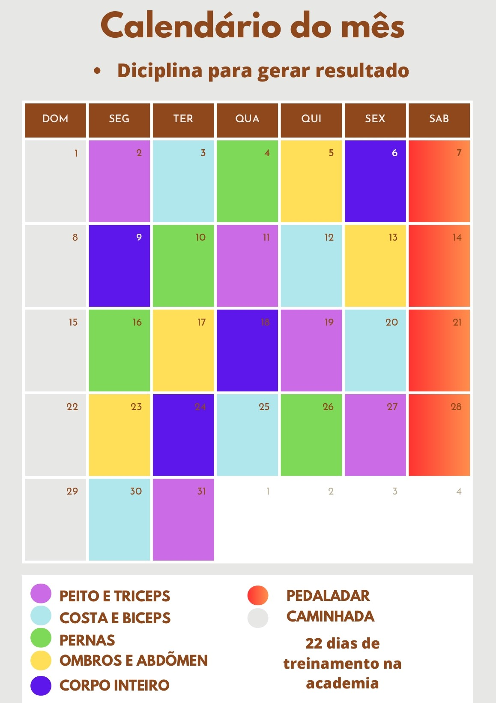

Diciplina e comprometimento com uma nova fase da sua vida.
O comprometimento é um aspecto fundamental para alcançar sucesso em diversas áreas da vida, seja no trabalho, nos relacionamentos, na educação ou em objetivos pessoais. Ele se refere à disposição e dedicação em cumprir com responsabilidades, metas e promessas.
Uma rotina é uma série de hábitos e atividades diárias que uma pessoa segue regularmente. A importância de uma rotina está relacionada a diversos aspectos da vida cotidiana, incluindo:
Eficiência: Uma rotina pode melhorar a eficiência na execução de tarefas. Quando você repete as mesmas ações regularmente, tende a aprimorar suas habilidades e a fazer as coisas mais rapidamente.
Um conteudo especial para quem quer ter diciplina com seus compromisso e ter uma vida de alta perfomace cumprindo todos os objetivos e tarefa ao longo do dia. Esse E-book conta com com mais de 18 paginas que vão ter ajudar a montar desde sua alimentação saudavel até seu sono porquê um bom sono pode transformar seu dia em um dia excepicional.
Importância do Sono, O sono é essencial para o funcionamento adequado do corpo e da mente. Durante o sono, o corpo realiza uma série de processos de reparo e manutenção, e o cérebro processa informações, consolida memórias e restaura a função cognitiva.
As refeições saudáveis fornecem a energia necessária para realizar as atividades diárias. Os carboidratos são uma fonte importante de energia, enquanto proteínas e gorduras ajudam a manter essa energia estável ao longo do tempo.
Controle de peso, ao Fazer escolhas alimentares saudáveis ajuda a controlar o peso corporal.E Uma dieta equilibrada pode auxiliar na manutenção de um peso saudável e na prevenção da obesidade, que está associada a várias doenças crônicas.

Aprenda a montar um calendario de treino para você ter uma rotina digna de um atleta, E para você ter mais eficiência ao longo do tempo e um corpo espertacular além de ter uma saúde de ferro. Você vai ganhar mais de 36 receita de alimentaçaõ para cada refeição do dia e também 12 dicas de sucos saudaveis.
Ter um calendário de anotações, como um calendário pessoal ou agenda, é extremamente útil por várias razões como: Organização Um calendário de anotações ajuda a manter a organização do seu tempo e atividades. Você pode registrar compromissos, eventos, tarefas e prazos importantes, tornando mais fácil lembrar e planejar suas responsabilidades diárias, semanais e mensais.
Gestão de metas e objetivos: Ao usar um calendário, você pode definir prazos para metas e projetos, acompanhando seu progresso e ajustando seu plano conforme necessário.